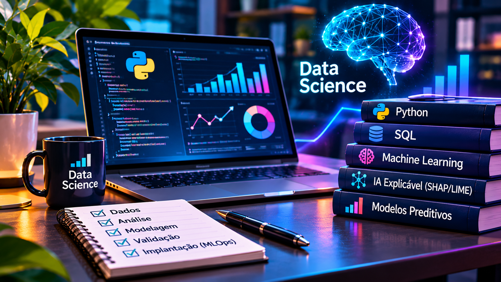

Bem-vindo ao meu universo
Ideias, caminhos e projetos que ganham vida.
Gestão financeira e comercial, ciência de dados e inteligência financeira: projetos, pesquisas e experiências que conectam visão de negócios à análise de dados.
Ver destaquesMinha históriaRegistros de alguém
que sonha alto ✨BY HELLEN SOUZA
que sonha alto ✨BY HELLEN SOUZA
Quem sou
Olá, eu sou a Hellen.
Sou graduanda em Ciência de Dados para Negócios na Fatec Votorantim, com experiência em gestão financeira, comercial e operacional. Integro análise de negócios, estruturação de processos e desenvolvimento de soluções orientadas por dados.
Tenho certificação CPA da ANBIMA e estudo inteligência financeira, prevenção a fraudes (FinCrime), modelos preditivos e IA explicável (LIME/SHAP). Este espaço reúne projetos acadêmicos, pesquisas, experiências e aprendizados.
Desde 2020Atuação em gestão e negócios
CPACertificação ANBIMA
2029Previsão de conclusão da graduação
Um universo, muitas possibilidades
Minhas cinco áreas de atuação
Conheça as frentes que conectam minha experiência profissional, meus estudos e os projetos que desenvolvo.
Finanças
Inteligência financeira, FinCrime, crédito, riscos e finanças empresariais e pessoais.
Explorar projetos ↗Robótica
Oficinas de Arduino, automação residencial e iniciativas de educação científica.
Explorar projetos ↗Gestão
Gestão financeira, comercial, operacional, de processos e do tempo.
Explorar projetos ↗
Data Science
Python, SQL, Streamlit, modelos preditivos e inteligência de dados para negócios.
Explorar projetos ↗Empreendedorismo
Empreendimentos, desenvolvimento de marcas, soluções de negócio e inovação.
Explorar projetos ↗Seleção especial
Projetos em destaque
Três projetos para conhecer minhas áreas de interesse e a maneira como estruturo soluções.
Acervo de projetos
Explore meu universo
Busque por nome, área ou ferramenta. Os registros diferenciam trabalhos documentados, projetos acadêmicos e conteúdos ainda em construção.
O catálogo local funciona sem conexão com o GitHub. Links e galerias externas dependem de internet.
Experiência aplicada
Resultados da minha trajetória
Indicadores relatados no currículo, vinculados às respectivas experiências profissionais.
Trajetória
Os caminhos que me trouxeram até aqui
Experiências profissionais e formação, com datas e resultados registrados no meu currículo.
2020–2023 · DUKE — Experiências Inteligentes
Gerente financeiro e comercial, em Barreiras (BA). Aumento de 30% no faturamento anual e recuperação de 95% do capital inadimplente com fluxos de cobrança orientados por dados.
2023–2024 · Empreendedorismo autônomo
Gestão de negócio próprio em Irecê (BA), abrangendo finanças, coordenação de equipes e melhoria de serviços.
2024–2025 · Terraço Duke
Sócia participativa, em Barreiras (BA). Triplicação da carteira de clientes por meio de inteligência de mercado e direcionamento financeiro e comercial.
2025 · BWM dos Santos & Cia
Gerente geral, em Barreiras (BA). Redução de 20% nos custos operacionais e otimização de 25% nas taxas bancárias e MDR.
2026–2029 (previsto) · Fatec Votorantim
Graduação em Ciência de Dados para Negócios. Projetos em análise estratégica, risco de crédito, IA explicável e inteligência financeira.
Pesquisa e projetos · Robótica, FinCrime e dados
Projetos Arduino Mulheres na Ciência e Caminhão da Ciência (UFOB); Operação Espelho Falso; Framework ICDF e estudos de risco de crédito.
Formação & competências
Conhecimento em construção contínua
Ferramentas, certificações e estudos registrados no currículo.
Ferramentas e métodos
Programação e dados: Python, SQL, C++, Git, GitHub, Jupyter Notebook, VS Code e Excel Avançado.
Modelagem: Random Forest, árvores de decisão, algoritmos e IA explicável (LIME/SHAP).
Negócios: fluxo de caixa, indicadores, valuation, gestão de riscos e auditoria interna.
Formação e certificações
Fatec Votorantim: Ciência de Dados para Negócios — conclusão prevista em 2029.
ANBIMA: CPA; Valuation e Gestão de Riscos e Performance.
Outros estudos: SQL para Ciência de Dados (UC Davis/Coursera), Produtividade (IPED) e Inovação e Desenvolvimento de Produtos (UNIVESP).
Em andamento: Fundamentos de Business Intelligence (Google/Coursera) e Analista de Dados do Microsoft Power BI (Microsoft/Coursera).
Espaço de experimentação
Laboratório da Hellen
Um lugar para protótipos, testes e ideias em desenvolvimento — sem confundir experimentos com resultados já validados.
Protótipo interativo
Painel Estratégico Itaú
Explore os indicadores, matrizes e ferramentas estratégicas convertidos para HTML.
Abrir painel →Pesquisa e desenvolvimento
ICDF Framework
Documentação da arquitetura e dos experimentos de decisão em crédito.
Ver estudo →Experimento
Operação Espelho Falso
Protótipo de investigação de fraudes e análise de evidências digitais.
Ver experimento →Vamos conversar?
Conexões que geram ideias.
Para conversar sobre ciência de dados, inteligência financeira, projetos, pesquisa e oportunidades profissionais.
Meu GitHub ↗E-mail ↗LinkedIn ↗GitLab ↗